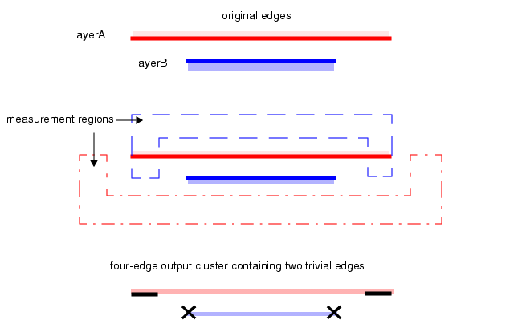

Trivial edge
generation can lead to a four-edge output cluster, which primarily
occurs when there are two output segments from edge A but none from
edge B, or vice versa. In this case, Calibre nmDRC constructs two
trivial output edges from B, each corresponding to a segment from
A. The output itself is a four-edge cluster.
For example, Figure 1 shows the generation of a four-edge
output cluster. This example uses the Square metric for measurement
region construction and indicates trivial edges with an X. The regions
are based on using an interval constraint.
Figure 1. Four-Edge Output Cluster